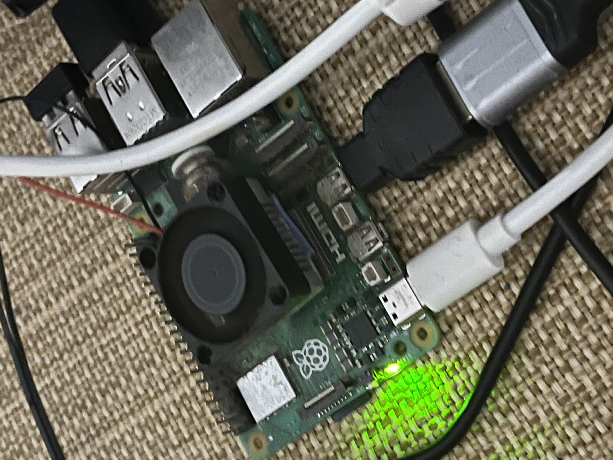
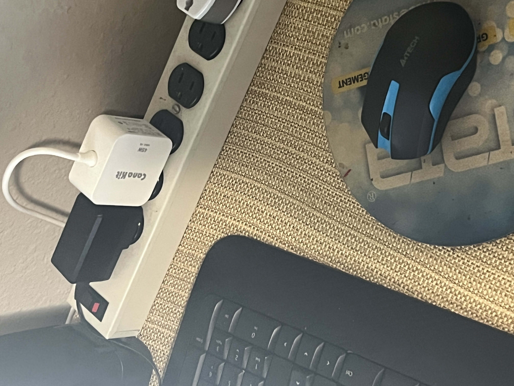
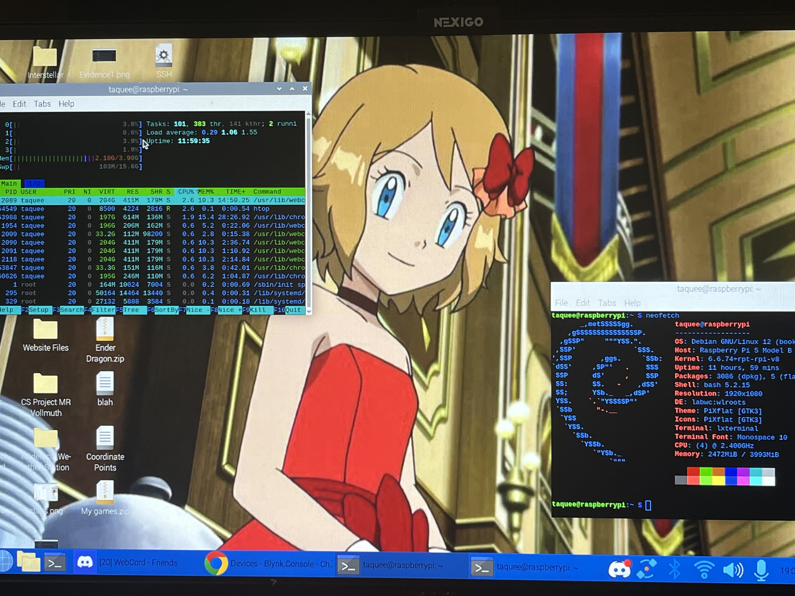
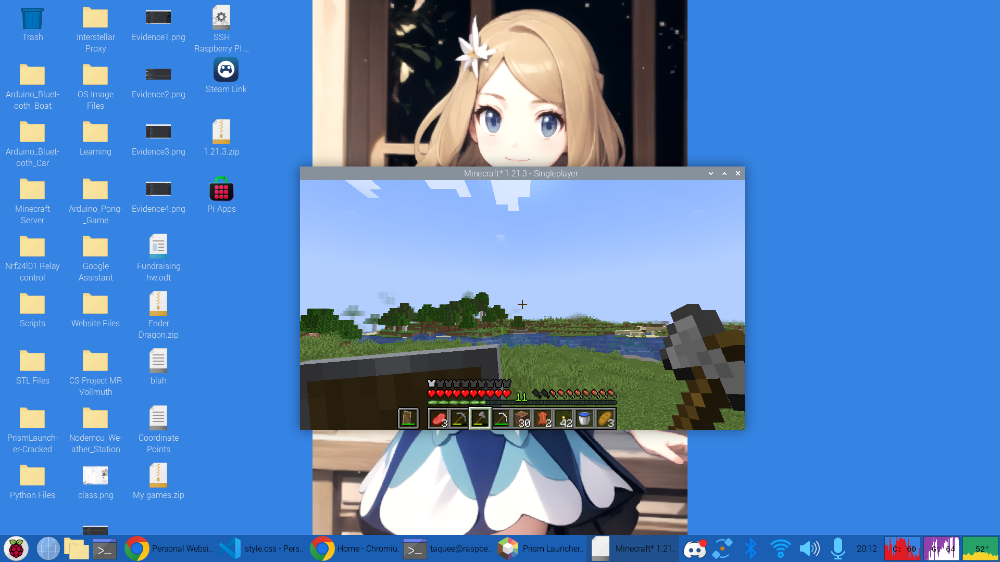
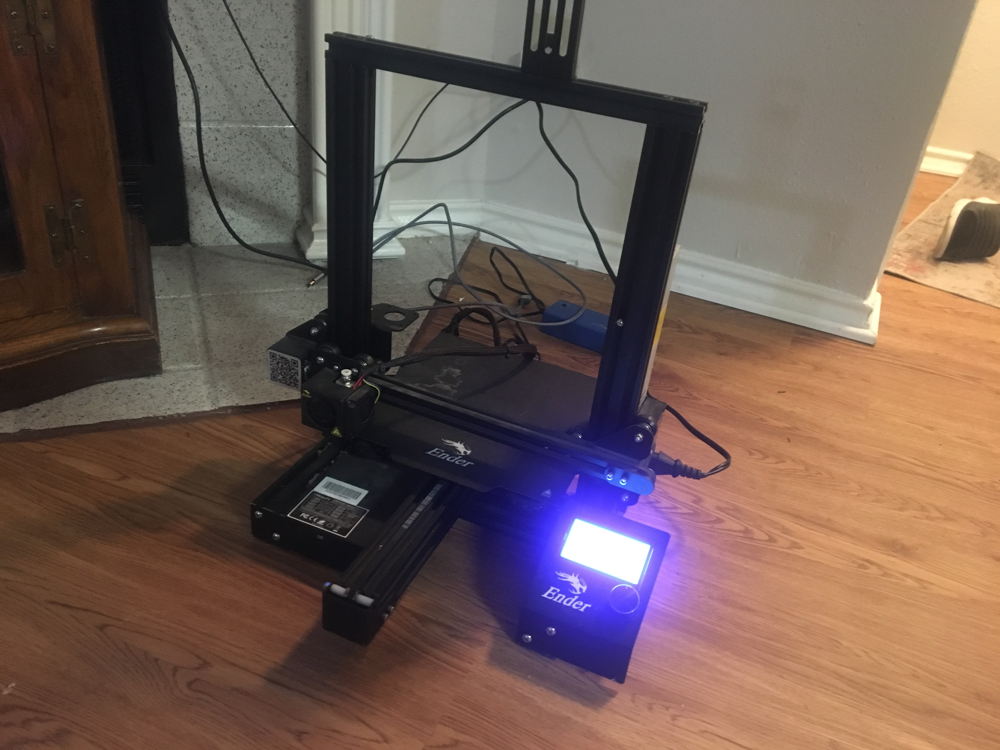
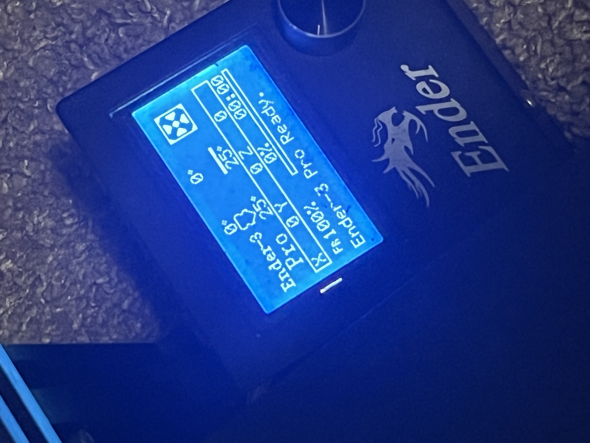
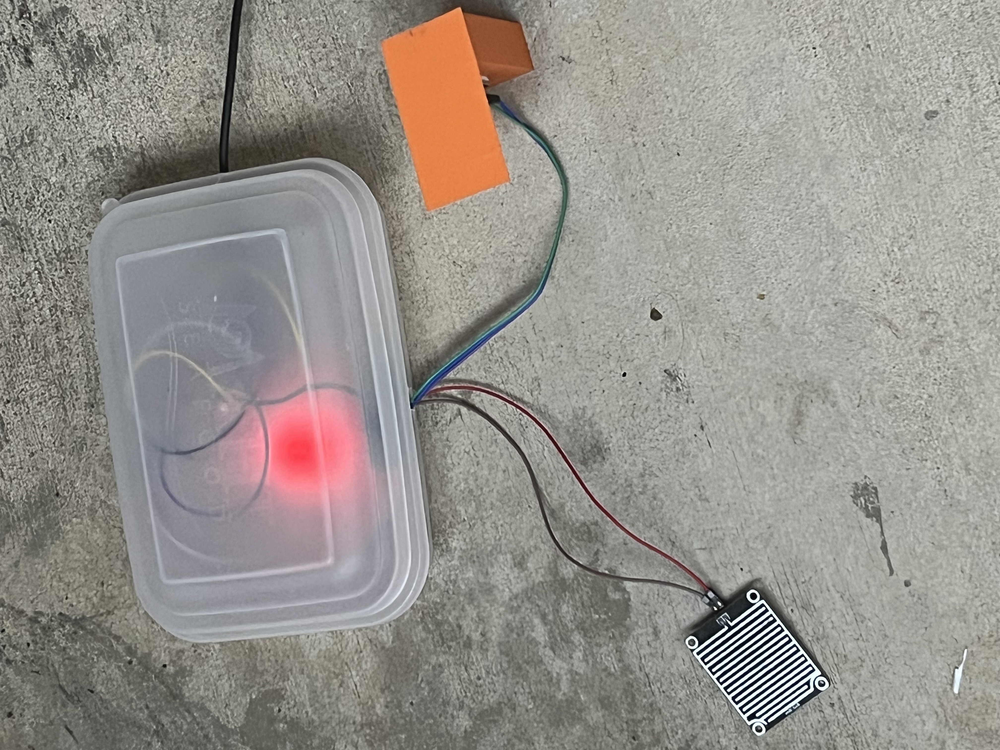
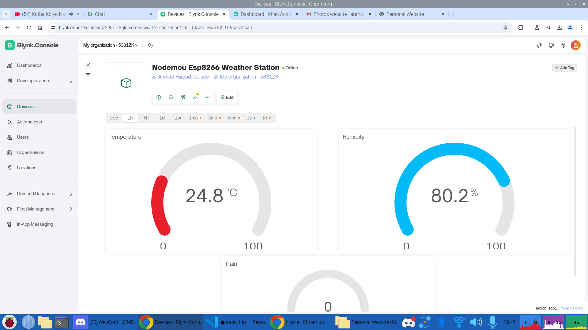
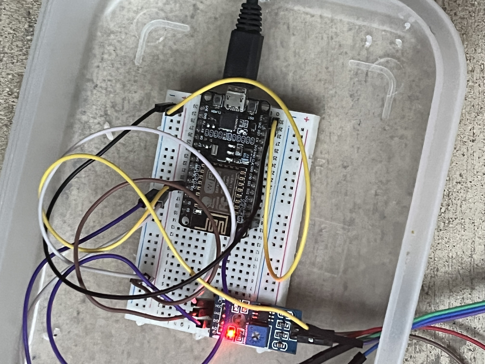
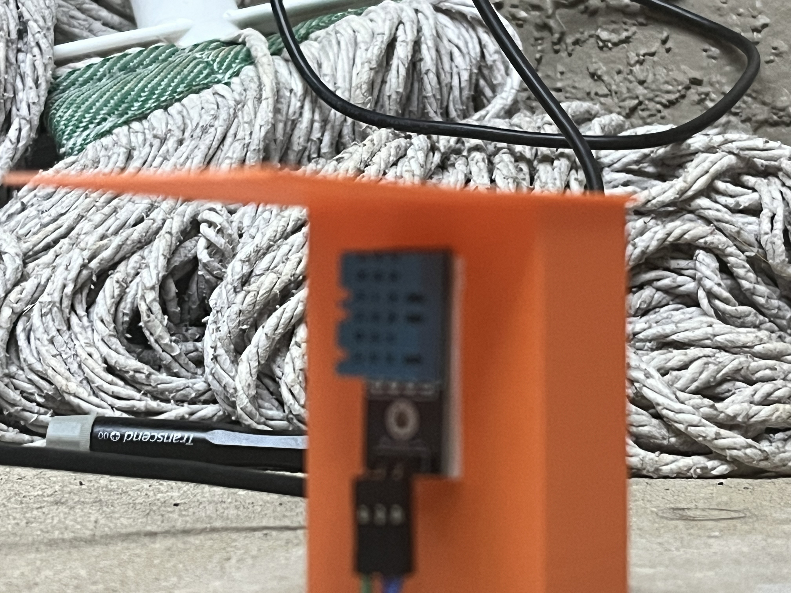

This is a Raspberry PI Computer, and it is an ARM Single Board Computer(SBC). Usually, people use it to make fun projects or just to tinker with it, but for me, it is my Personal Computer. I got my first Raspberry PI 4 when I was 12 for my Birthday and then got a Raspberry PI 5 from my friend Frank.
 The Raspberry PI runs Raspberry PI OS which is based on Debian Linux, so I use linux on a day to day basis. The browser I use on here is the open-source chromium browser. The app store I use is the Pi-apps store. For games, PPSSPP, Retropie and also Minecraft is installed. This computer is pretty powerful and I love it.
The Raspberry PI is based on the Advanced RISC Machine(ARM) architecture, so a lot of software that run on PCs won't run. The Soc include a quad-core arm cortex-a76 along with videocore VII graphics. The default clock speed is 2.4Ghz on the cpu and 800Mhz on the gpu. Both can be overclocked.
The project I am have created is a bluetooth controlled car using arduino and can be controlled via android-only app. I've always been really interested in Remote Controlled Cars and so this was an amazing project for me.
I first printed out the rectangular chasis that I have designed and hot-glued 4 Geared motors and added copper wires to them. Then, I used double-sided tape to stick the Arduino UNO with the L293D Shield and the HC-05 module onto the chasis. Afterwards, I connected all the wires and uploaded the code to the Arduino. Paired the blueooth module and the car works amazing.
Basically the same project, but with added solar panels. This means the car can run purely on energy from the sun. This increases the weight and bulkiness of the machine, but also makes it a moving power bank and it also looks really cool!
Again, built upon the main bluetooth car project, but this time it adds a ultrasonic sensor to detect objects and their distance. The sensor runs at a sound frequency of 20Ghz, making it inaudible to humans. The sensor is placed in the front of the car and it constantly detects things in front. If it finds anything within 20cm, it'll immediately stop the car!
/*
This code was written by Ahmad Farzad Taquee for the 2024-2025
science fair competition. This is intended to be used with
Arduino UNO R3 boards.
*/
#include // define library
//define the pins of the motors
AF_DCMotor motor1(1, MOTOR12_1KHZ);
AF_DCMotor motor2(2, MOTOR12_1KHZ);
AF_DCMotor motor3(3, MOTOR34_1KHZ);
AF_DCMotor motor4(4, MOTOR34_1KHZ);
int val;
int Speeed = 255;
void setup()
{
Serial.begin(9600); //Baud Rate
}
void loop(){
if(Serial.available() > 0){
val = Serial.read();
Stop();
if (val == 'F'){
forward();
}
if (val == 'B'){
back();
}
if (val == 'L'){
left();
}
if (val == 'R'){
right();
}
if (val == 'T'){
Stop();
}
}
}
void forward()
{
motor1.setSpeed(Speeed); //Define maximum velocity
motor1.run(FORWARD); //rotate the motor clockwise
motor2.setSpeed(Speeed); //Define maximum velocity
motor2.run(FORWARD); //rotate the motor clockwise
motor3.setSpeed(Speeed);//Define maximum velocity
motor3.run(FORWARD); //rotate the motor clockwise
motor4.setSpeed(Speeed);//Define maximum velocity
motor4.run(FORWARD); //rotate the motor clockwise
}
void back()
{
motor1.setSpeed(Speeed); //Define maximum velocity
motor1.run(BACKWARD); //rotate the motor anti-clockwise
motor2.setSpeed(Speeed); //Define maximum velocity
motor2.run(BACKWARD); //rotate the motor anti-clockwise
motor3.setSpeed(Speeed); //Define maximum velocity
motor3.run(BACKWARD); //rotate the motor anti-clockwise
motor4.setSpeed(Speeed); //Define maximum velocity
motor4.run(BACKWARD); //rotate the motor anti-clockwise
}
void left()
{
motor1.setSpeed(Speeed); //Define maximum velocity
motor1.run(BACKWARD); //rotate the motor anti-clockwise
motor2.setSpeed(Speeed); //Define maximum velocity
motor2.run(BACKWARD); //rotate the motor anti-clockwise
motor3.setSpeed(Speeed); //Define maximum velocity
motor3.run(FORWARD); //rotate the motor clockwise
motor4.setSpeed(Speeed); //Define maximum velocity
motor4.run(FORWARD); //rotate the motor clockwise
}
void right()
{
motor1.setSpeed(Speeed); //Define maximum velocity
motor1.run(FORWARD); //rotate the motor clockwise
motor2.setSpeed(Speeed); //Define maximum velocity
motor2.run(FORWARD); //rotate the motor clockwise
motor3.setSpeed(Speeed); //Define maximum velocity
motor3.run(BACKWARD); //rotate the motor anti-clockwise
motor4.setSpeed(Speeed); //Define maximum velocity
motor4.run(BACKWARD); //rotate the motor anti-clockwise
}
void Stop()
{
motor1.setSpeed(0); //Define minimum velocity
motor1.run(RELEASE); //stop the motor when release the button
motor2.setSpeed(0); //Define minimum velocity
motor2.run(RELEASE); //rotate the motor clockwise
motor3.setSpeed(0); //Define minimum velocity
motor3.run(RELEASE); //stop the motor when release the button
motor4.setSpeed(0); //Define minimum velocity
motor4.run(RELEASE); //stop the motor when release the button
}
A 3D printer is something I always wanted and dreamed of having. Last year, I fulfilled my dream. Before we even moved to the USA, my dad found this and brought it home. I carefully examined it and started working on it step by step. The picture shows when I'd just cleaned it up and found out it turns on!
After more hard work and persuation, my mom finally allowed me to buy a metal extruder for the station, after which I was able to test out the movements of the 3D printer. This was when I found out how to use the UI to control the printer.
The 3D Printer has been one of the best and most expensive tools that I own, and it has helped me in countless projects. I have used it to make the body of the Arduino Bluetooth Car project, the shade for the DHT11 Temperatue and Humidity sensor in the Weather Station project, and countless others. I have also made a lot of toys and mini sculptures using it for myself and my friends and family.
The Weather Station has a arduino rain sensor along with a DHT11 Temperature and Humidity sensor. The Nodemcu Esp8266 reads these data and sends them to the blynk IOT server. There, I can login from anywhere in the world and get the readings. But, you have to create a device on blynk to get an Auth Token and give wifi credintials for it to connect to the internet. As long the internet is on, it'll send data to my blynk dashboard.
The Weather Station sends data to my blynk dashboard at a heartbeat of 2 seconds. There are 3 gauges, the first one shows Temperature in celcius, the second one humidity in percentage, and the last but not least rain one gives me rain in percentage based on the amount of rain on the sensor.
The main body of the Weather Station which is basically a plastic box that houses the sensitive components and the Nodemcu Esp8266 coumputer/microcontroller to protect them from the elements. The DHT11 Temperature and Humidity sensor and the rain sensor are kept outside so that they can gather data, and a micro usb cable provides power for the wall outlet.
 
#define BLYNK_PRINT Serial
#include
#include
#include
#define DHTPIN D3 // DHT sensor pin
#define DHTTYPE DHT11 // DHT sensor type
DHT dht(DHTPIN, DHTTYPE);
char auth[] = "BKtjzGwT56et4C3Xh6HvKCVaP1IrzTFK"; // Blynk auth token
char ssid[] = "TaqueeToha"; // Wi-Fi SSID
char pass[] = "FarzadFawad"; // Wi-Fi password
BlynkTimer timer; // Creates a timer object
int rainSensorPin = A0; // Analog pin for rain sensor
// Function to send DHT11 and Rain Sensor data to Blynk
void sendSensorData() {
float humidity = dht.readHumidity();
float temperature = dht.readTemperature();
if (isnan(humidity) || isnan(temperature)) {
Serial.println("Failed to read from DHT sensor!");
} else {
Serial.print("Temp: ");
Serial.print(temperature);
Serial.print("°C, Humidity: ");
Serial.print(humidity);
Serial.println("%");
Blynk.virtualWrite(V0, temperature); // Send temperature to Blynk
Blynk.virtualWrite(V1, humidity); // Send humidity to Blynk
}
int rainValue = analogRead(rainSensorPin); // Read raw rain sensor value
int rainPercent = -0.1483 * rainValue + 151.9287;
//int rainPercent = -0.1602 * rainValue + 164.1025
Serial.print("Raw Value: ");
Serial.println(rainValue);
Blynk.virtualWrite(V2, rainPercent); // Send raw rain sensor value to Blynk (V2)
}
void setup() {
Serial.begin(115200);
delay(1000);
Serial.println("Connecting to WiFi...");
Blynk.begin(auth, ssid, pass, "blynk.cloud", 80);
dht.begin(); // Initialize DHT sensor
timer.setInterval(2000L, sendSensorData); // Run every 2 seconds
}
void loop() {
Blynk.run(); // Handles Blynk connection
timer.run(); // Runs the timer
}
The project was originally inspired from the Arduino Bluetooth Car, as it has a lot of the same components and uses the same app to control it. However, it doesn't use geared motors but normal D.C. motors along with propellars.
The electronics are almost the same, but uses 2 normal D.C. motors instead of geared ones. The electronics are placed in a chasis made from a food container, and a blueooth module is also added for communication. It uses the same app the blueooth car uses. To be continued......